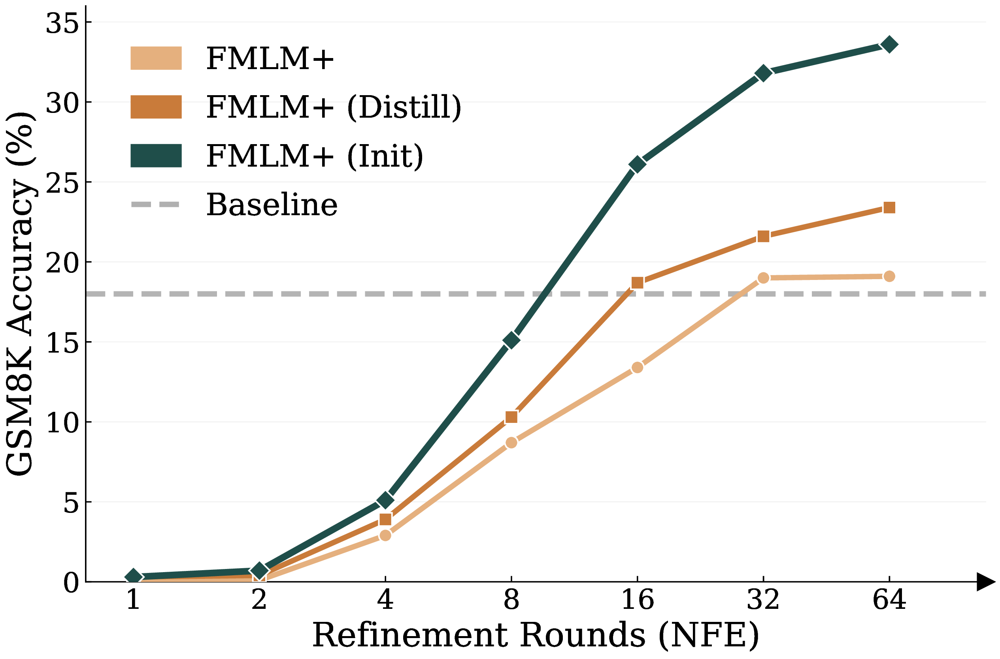
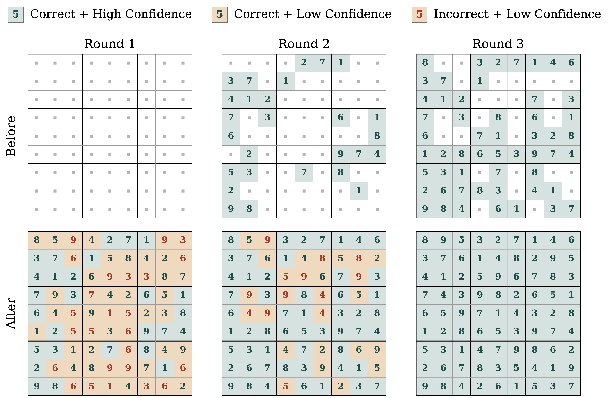
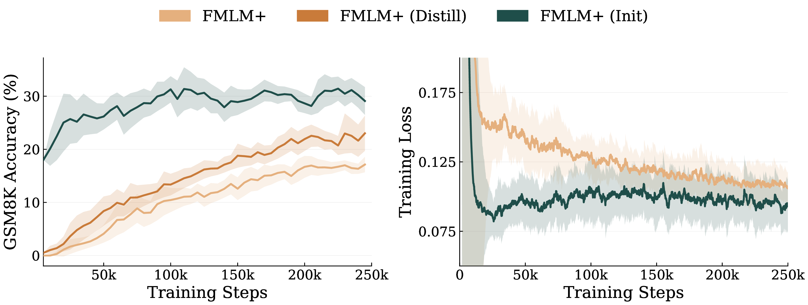
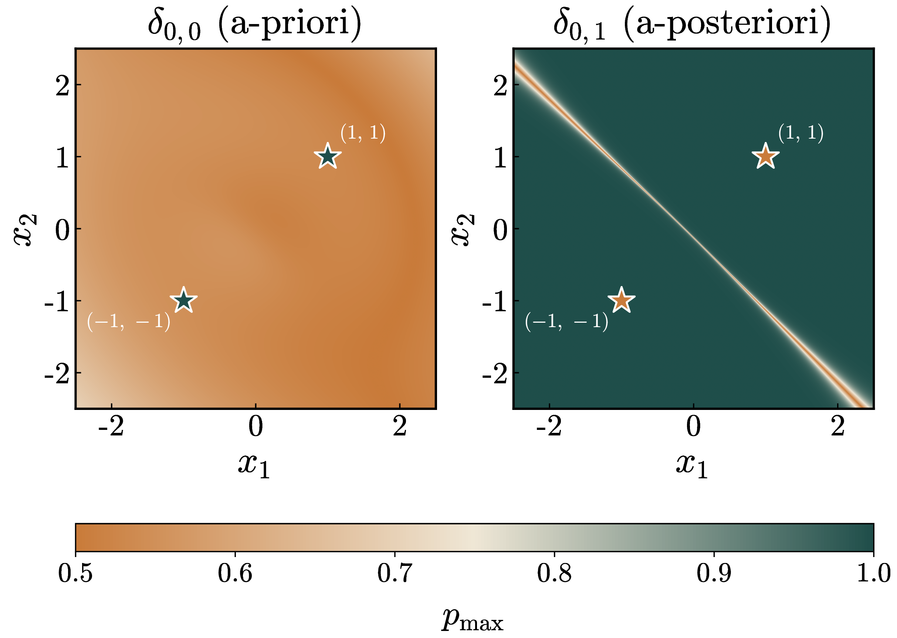

We make iterative refinement actually work for non-autoregressive LMs.

Non-autoregressive generation offers a powerful paradigm for iterative refinement, allowing models to recursively critique, erase and regenerate arbitrary subsets of tokens. However, existing non-autoregressive models fail to realize this potential. Masked Diffusion Models (MDMs) suffer from factorization error, causing sample quality to collapse when generating multiple tokens simultaneously. Flow Map Language Models (FMLMs) circumvent this bottleneck via joint sequence transport for excellent few-step generation, but sacrifice the inference-time flexibility of MDMs.
We introduce FMLM+, a framework that bridges this gap by equipping FMLM with masking-style noise schedules. While generating the full sequence in a single step, FMLM+ simultaneously scores the global consistency of each token a posteriori. We leverage this to introduce Posterior Refinement, a novel inference-time refinement strategy that enables the model to adaptively self-correct its outputs, matching the performance of discrete baselines with 32× fewer NFEs. Across diverse benchmarks, we demonstrate that FMLM+ with Posterior Refinement improves the speed–quality tradeoff over both MDM and FMLM families, providing a scalable foundation for high-fidelity language modeling.

Posterior Refinement with FMLM+. Posterior Refinement lets the model judge the fit of each token after the fact and fix its own mistakes in parallel. The model generates all tokens in parallel and scores each token's posterior confidence given the entire draft. It commits the high-confidence tokens, re-noises the rest, and repeats. Crucially, the incorrect tokens consistently fall within the low-confidence set, so refinement reliably filters and revises errors.
MDMs only produce independent token-wise marginals. To decide which tokens to keep, they estimate confidence a priori — without knowing what tokens will be generated at other positions. In contrast, Posterior Refinement estimates confidence a posteriori — after the full sequence is generated. This allows the model to assess global consistency and revise mistakes based on the entire context.
Confidence sampling with MDMs has been popularized by solving Sudoku puzzles. We show that when the target is multi-modal, such as when generating Sudoku boards, a-priori confidence fails catastrophically, while FMLM+'s a-posteriori confidence achieves 87% accuracy in just a few evaluations.
| Method | Unconditional Sudoku (%, ↑) | ||||
|---|---|---|---|---|---|
| 1 | 3 | 9 | 27 | 81 | |
| MDLM (Ancestral) | 0 | 0 | 0 | 7.7 | 33.8 |
| MDLM (Confidence) | 0 | 0 | 0 | 0.0 | 97.2 |
| FMLM+ (a-posteriori) | 0 | 22.2 | 87.1 | 98.8 | 99.6 |
Accuracy (%, ↑) versus number of function evaluations. A-priori confidence fails catastrophically when sampling multiple tokens at once.
Posterior Refinement delivers large efficiency gains across all considered benchmarks. On Sudoku, FMLM+ reaches 97.9 / 92.0 / 71.2 (Easy/Med./Hard) with just 4 NFEs — surpassing every baseline evaluated at 128 NFEs. On GSM8K, it reaches 19.0% accuracy at 32 NFEs, a 32× speedup over the strongest non-autoregressive baselines at matched accuracy. On TinyStories and OpenWebText, FMLM+ matches or surpasses every diffusion baseline with up to 8× fewer evaluations.
| Method | Sudoku | GSM8K | ||||
|---|---|---|---|---|---|---|
| NFE | Easy | Med. | Hard | NFE | Acc. (%) | |
| Autoregressive | ||||||
| Sample | 128 | 13.9 | 5.1 | 0.6 | 512 | 53.9 |
| Discrete Diffusion | ||||||
| MDLM | 128 | 92.0 | 77.1 | 30.2 | 1024 | 18.0 |
| Duo | 128 | 96.3 | 84.7 | 58.4 | 1024 | 17.2 |
| Continuous Diffusion | ||||||
| CANDI | 128 | 79.3 | 45.9 | 16.7 | 1024 | 0.2 |
| S-FLM | 128 | 94.8 | 85.2 | 45.0 | 1024 | 18.0 |
| FMLM+ (PR) | 4 | 97.9 | 92.0 | 71.2 | 32 | 19.0 |
| Method | TinyStories | OpenWebText | ||||
|---|---|---|---|---|---|---|
| NFE | Gen. PPL ↓ | Entropy ↑ | NFE | Gen. PPL ↓ | Entropy ↑ | |
| Autoregressive | ||||||
| Sample | 128 | 8.89 | 4.01 | 1024 | 35.45 | 5.58 |
| Discrete Diffusion | ||||||
| MDLM | 128 | 18.74 | 4.03 | 1024 | 105.15 | 5.63 |
| Duo | 128 | 22.73 | 4.05 | 1024 | 77.69 | 5.55 |
| Continuous Diffusion | ||||||
| CANDI | 128 | 46.32 | 4.04 | 1024 | 143.13 | 5.71 |
| FLM | 128 | 57.50 | 4.17 | 1024 | 62.23 | 5.33 |
| S-FLM | 128 | 95.25 | 4.08 | 1024 | 123.87 | 5.52 |
| FMLM+ (PR) | 32 | 17.53 | 3.96 | 128 | 66.6 | 5.21 |
We show that the masked diffusion training objective is exactly the boundary case s = t = 0 of the FMLM+ training objective. This correspondence makes the growing pool of pretrained MDMs directly usable to accelerate FMLM+ training, via either distillation (using the MDM as a teacher) or direct warm-starting from its weights.
| Method | GSM8K (%, ↑) by NFE | ||||||
|---|---|---|---|---|---|---|---|
| 1 | 2 | 4 | 8 | 16 | 32 | 64 | |
| MDLM (Teacher) | 0.0 | 0.0 | 0.1 | 0.6 | 4.7 | 9.0 | 13.4 |
| FMLM+ | 0.0 | 0.1 | 2.9 | 8.7 | 13.4 | 19.0 | 19.1 |
| FMLM+ (Distill) | 0.3 | 0.4 | 3.9 | 10.3 | 18.7 | 21.6 | 23.4 |
| FMLM+ (Init) | 0.3 | 0.7 | 5.1 | 15.1 | 26.1 | 31.8 | 33.6 |
GSM8K accuracy (%, ↑) under Posterior Refinement, comparing three FMLM+ training strategies against the MDM teacher.

Starting from pure Gaussian noise, FMLM+ steps along the flow trajectory to simultaneously denoise all positions. At the final integration step, because the model operates on a nearly complete sequence, it implicitly evaluates the conditional probability of each token given the rest of the generated text. This enables us to compute token confidence conditioned on the fully generated sequence, effectively evaluating each token's fit within the global context.
Similar to how MDMs use the maximum token probability as a confidence measure, we use $$p_{\max}^l := \max_v(\hat{x}^{l,v}),$$ where $\hat{x}$ is the the empirical generated sequence, as the a posteriori confidence measure for position $l$.
An ideal FMLM would always produce one-hot vectors. In practice, however, the model outputs categorical distributions that are not strictly one-hot. We interpret the rounding error of this projection as a proxy for the model's confidence. This interpretation aligns with our empirical observations in Sudoku, where we find that incorrect tokens consistently exhibit high rounding error.
Key idea. MDMs, and equivalently δ0,0, conflate aleatoric uncertainty, the inherent randomness of the data distribution, with epistemic uncertainty, the model’s internal confidence. We hypothesize that by failing to perfectly learn the joint transport from Gaussian noise to clean one-hot data, the FMLM trajectory is able to surface the true epistemic uncertainty of the model through errors in its predictions.

Two types of confidence. On a 2-mode toy problem, the one-step FMLM δ0,1 outputs high confidence for most inputs. Low-confidence regions concentrate near decision boundaries, where the endpoint is ambiguous, indicating δ0,1 captures the epistemic confidence of the model. In contrast, δ0,0 is flat for all inputs, reflecting its aleatoric nature.
@article{agarwal2026posteriorrefinement,
title={Posterior Refinement: Fast Language Generation via Any-Order Flow Maps},
author={Manan Agarwal and Sheel Shah and Chanhyuk Lee
and Jaehoon Yoo and Jerry Huang and Seunghoon Hong
and Aditi Raghunathan and Jinwoo Kim and Nicholas M. Boffi},
journal={arXiv preprint arXiv:2606.24773},
year={2026},
}
If you have any questions about the paper, code, or potential collaborations, please feel free to reach out to us at mananaga, sheels@cs.cmu.edu.
We would like to thank Modal Labs for their generous compute grants, which proved invaluable in supporting this work.